项目克隆
git clone git@git.rooyun.com:h5book/h5book.git
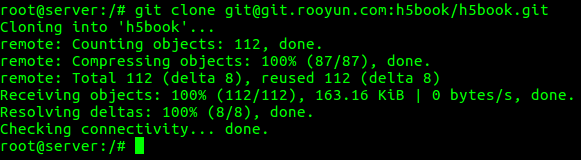
项目切出分支并查看所有分支
# 新建 mouyong 分支，并切换到 mouyong 分支
git checkout -b mouyong
# 查看所有分支，包括本地和远程的分支，* 星 表示当前所在的分支，红色的表示远程分支
git branch -a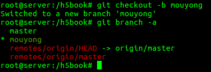
生成本地 env 文件，并配置应用密钥
# 在项目根目录执行
# 生成文件名为 .env 本地环境的配置文件
cp .env.example .env
# 生成应用程序密钥
php artisan key:generate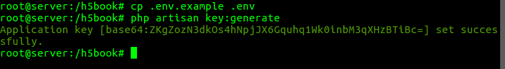
可以 vim .env 查看密钥是否成功配置
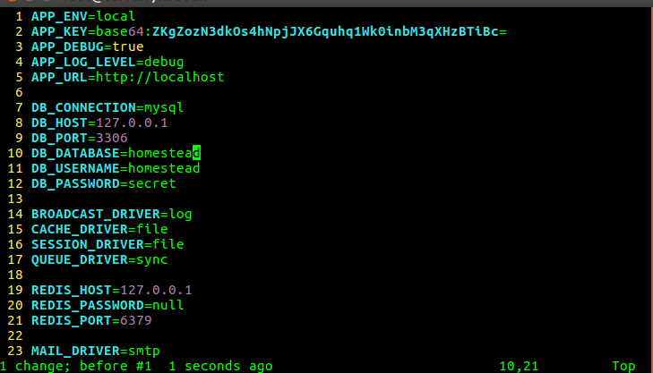
应用程序密钥说明
设置 laravel 文件目录权限
chmod 777 -R storage/ bootstrap/cache/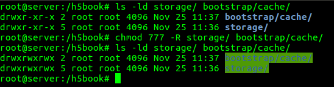
目录权限说明
安装 composer 组件
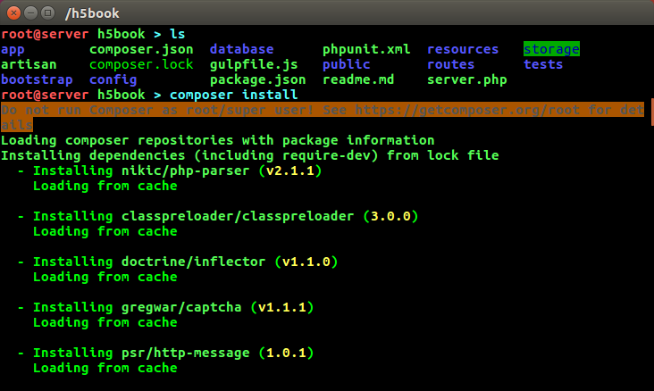
组件安装完成后，就可以看到 vendor 文件夹了。
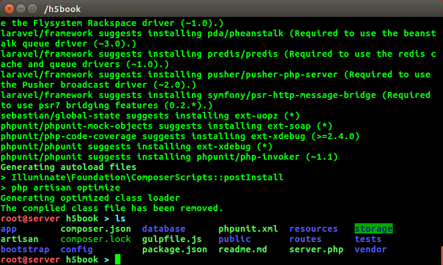
Apache 添加重写模块
ln -s /etc/apache2/mods-avaliable/rewrite.load /etc/apache2/mods-enabled/
# 查看是否添加成功
ls /etc/apache2/mods-enabled/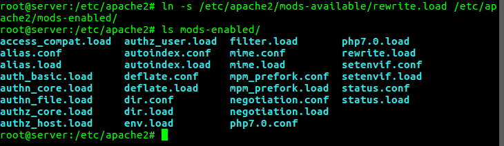
目录添加重写功能
# 修改或新增 apache 主配置文件 apache.conf 中的如下内容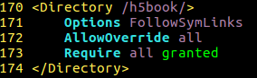
apache 添加 vhost 并配置 软链接
cd /etc/apache2/site-enable/
cp ../site-avaliable/000-default.conf ../site-avaliable/h5book.conf
ln -s /etc/apache2/site-avaliable/h5book.conf /etc/apache2/site-enable/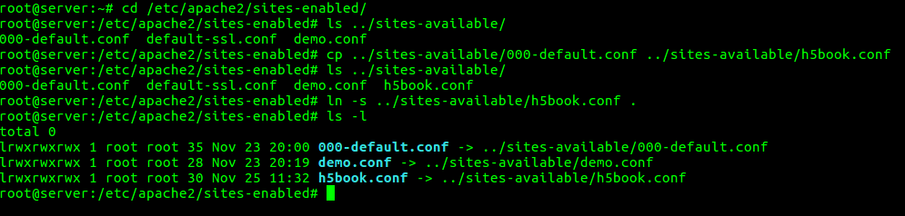
虚拟主机的配置
将 vhost 文件中的部分内容做类似如下的修改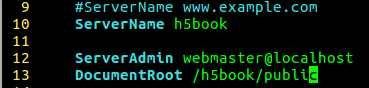
重启 apache，产生可忽略警告
apachectl restart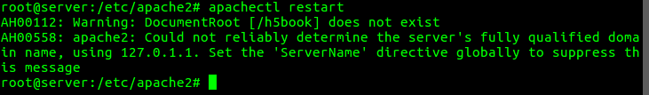
可忽略警告，的处理办法，下次不再警告
#在 apache 主配置文件中 apache.conf 的最后一行添加如下内容即可解决。修改配置文件后重启 apache 服务器。
apachectl restart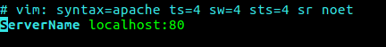
虚拟机的 hosts 文件修改，为项目添加一个域名
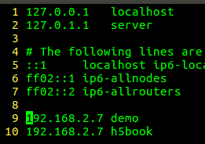
宿主主机 hosts 文件修改，使之能够解析到虚拟机
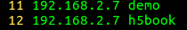
打开 phpstorm
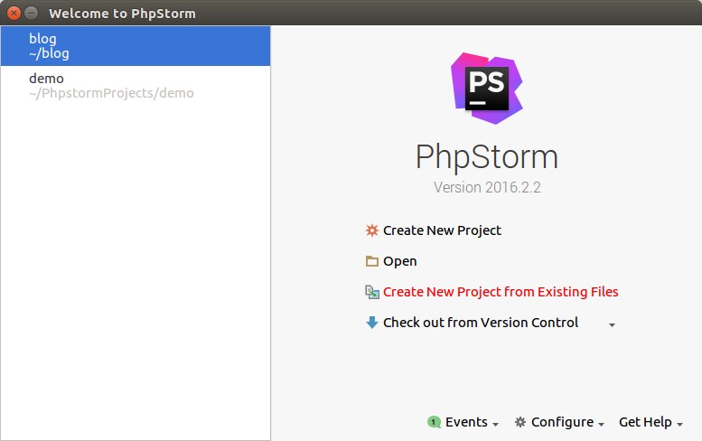
选择 web server is on remote host, files are accessible via FTP/SFTP/FTPS
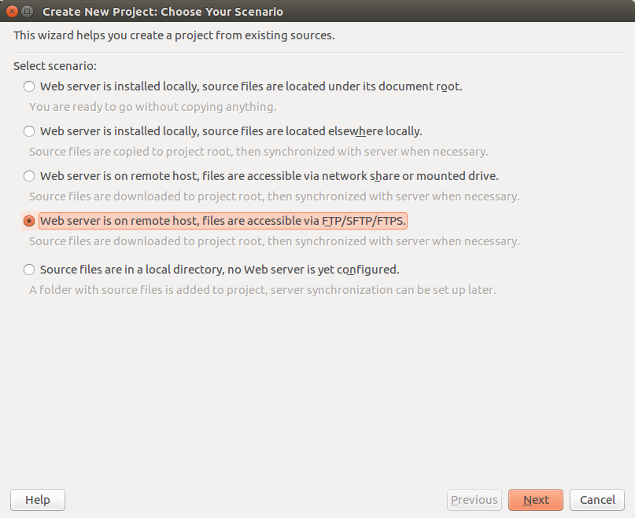
选择添加一个远程服务器
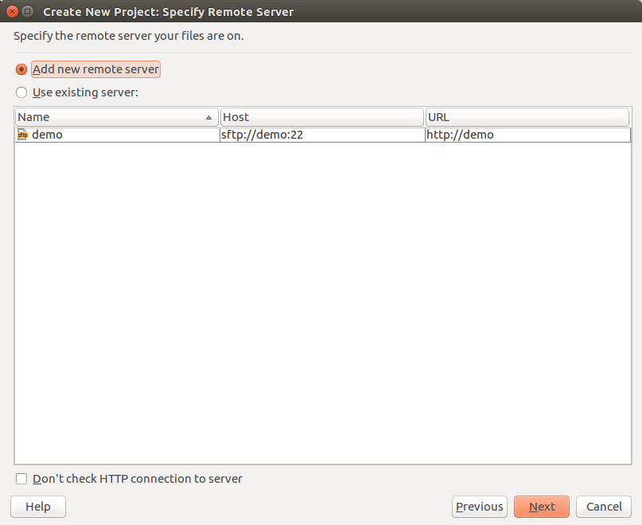
phpstorm 远程主机设置
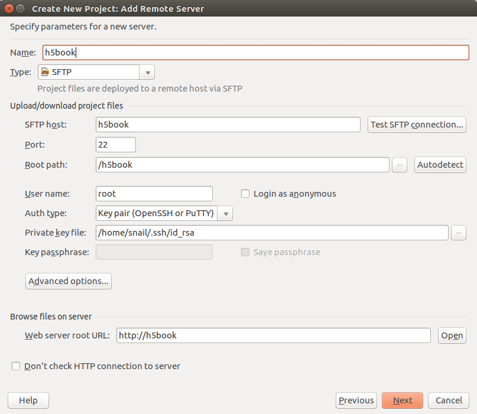
点击 Autodetect 旁边的 3个点，接受服务器发送过来的哈希字符串
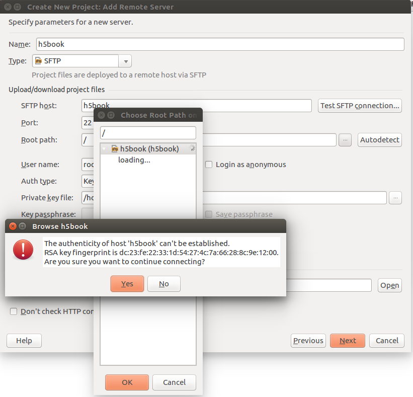
选择远程文件
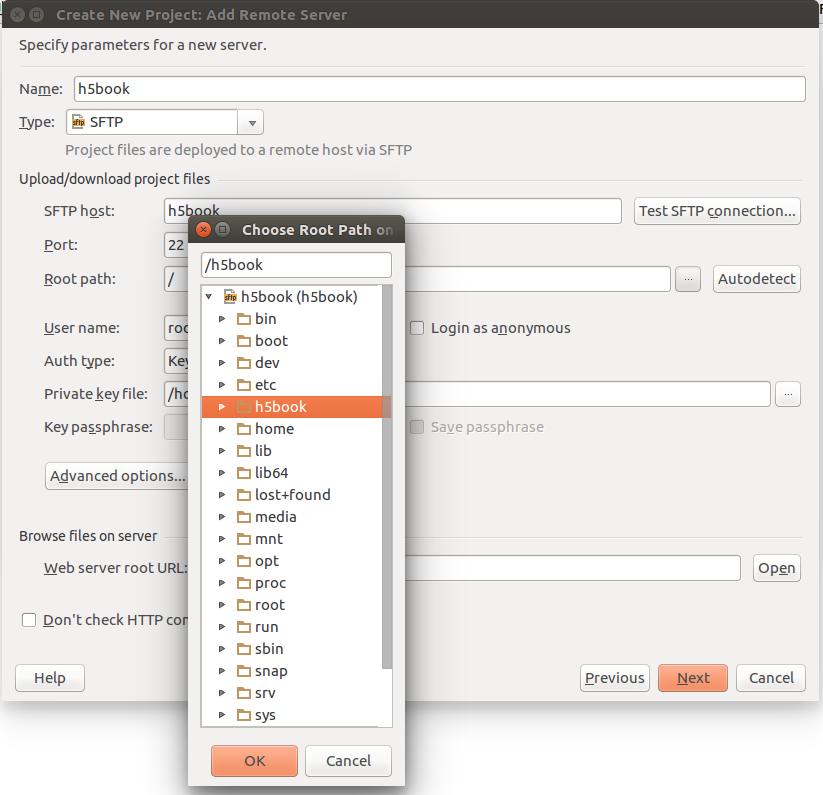
点击 Test SFTP connection… 进行连接测试，能看到测试通过
我使用的密钥的方式，读者可以选择密码的方式，这样需要注意密码旁边的复选框，保存密码一定要勾上
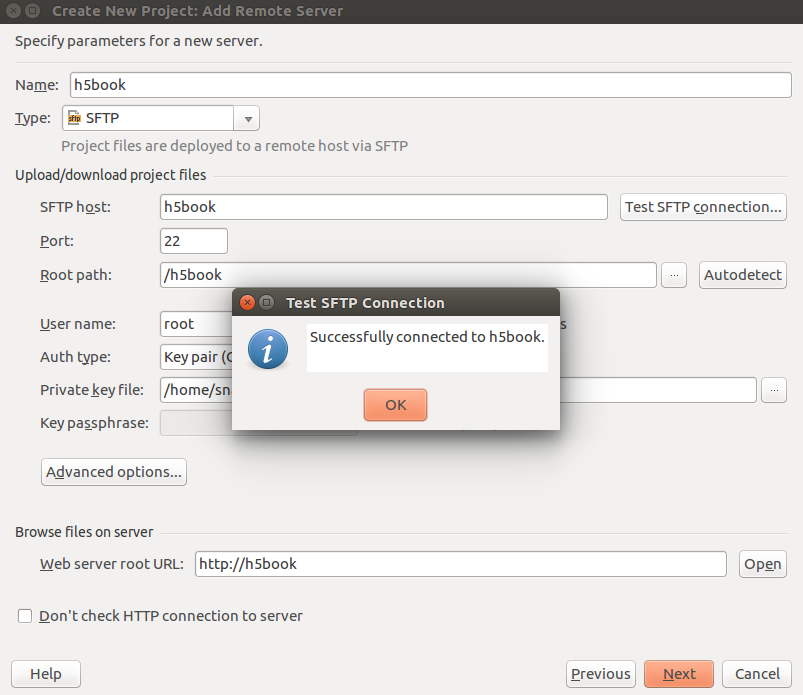
添加 web path
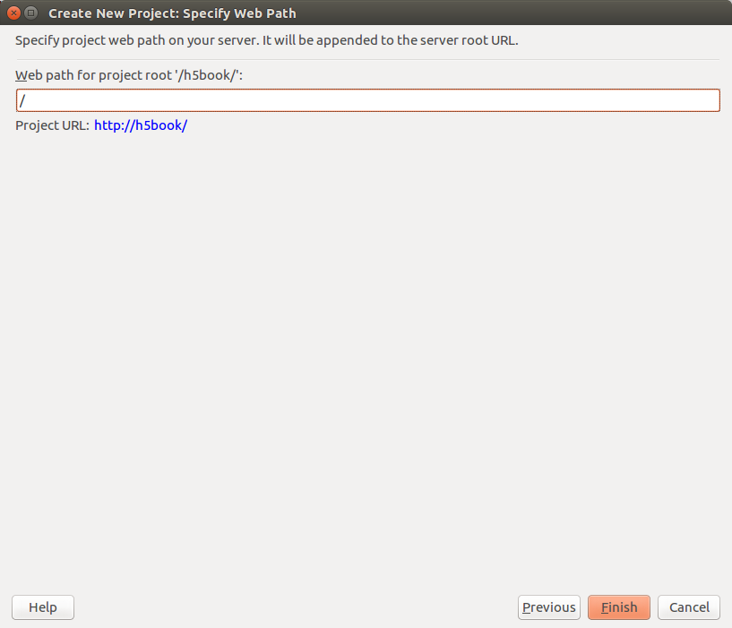
设置项目根路径
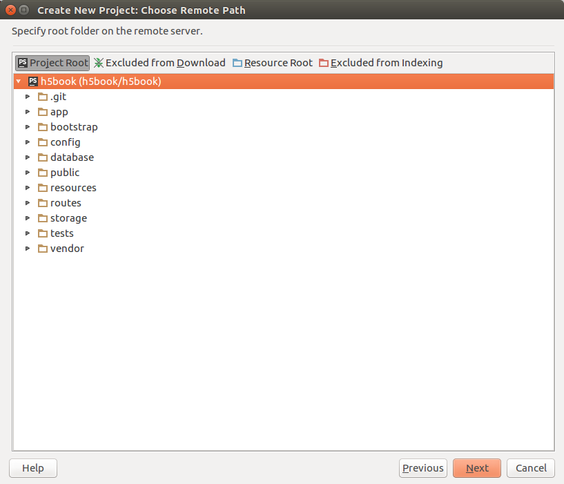
Project Root # 项目根目录
Excluded from Download # 选中被标记为此项的不要下载
Resource Root # 资源根目录
Excluded from Indexing # 选中被标记为此项的不要索引配置完成所有的选项后，开始从 虚拟机 下载项目到宿主机
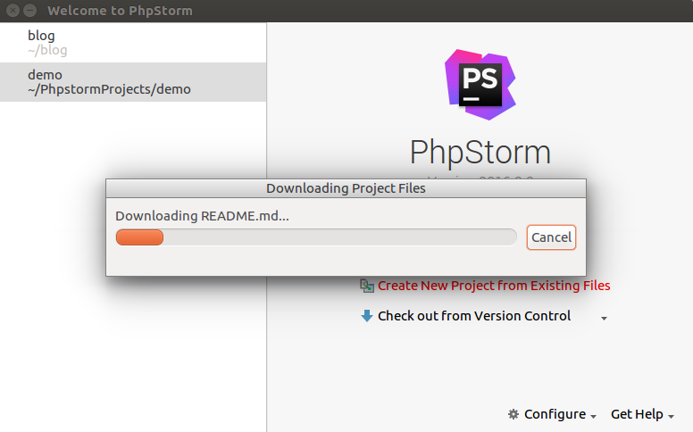
点击 phpstorm 菜单栏中的 Tools 下的 Deployment 选项中的 Options。
将 Upload changed files automatically to the default server 从 Never 选项改为按 Ctrl + S 上传，这样，你做了任何修改，只要按了保存的快捷键，文件就会上传到虚拟机了。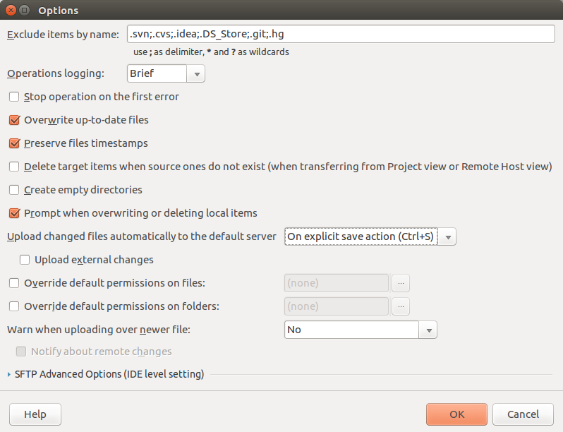